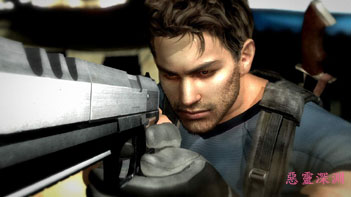
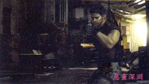
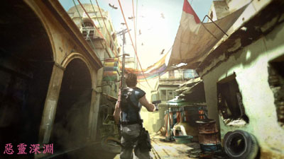
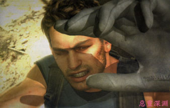
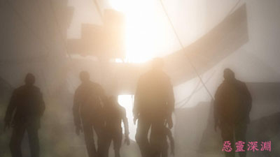

|
|
|
惡靈古堡５ |
|
 惡靈古堡5，目前開發中！ 預定對應平台：XBOX 360、PS3 製作人：竹內潤 遊戲主角：Chris Redfield 新作將支援新一代的高解析度電視HDTV輸出，呈 現出比現有傳統電視多出一倍以上的掃描線與解析 度。
遊戲的系統將承襲四代，採 16:9 寬螢幕的全 3D 遊戲畫面與背向主觀視點，劇情內容也將延續四代的故事發展。
雖說故事和遊戲系統都承接著四代繼續發展，但是遊 戲中主要的敵人似乎又和四代出現的疫生獸有所不同，是 否是在Wesker的主導下所發展出的事物。Wesker會不會登 場，將主導整個故事的方向。
以下為FAMI通TV GAME綜合情報誌台灣版200７ 27期節錄之訪問內容。 （以下為訪談內容） 在那之後的克里斯 故事時間設定在洋房事件（洋館事件）大約10年後，遊戲似乎和實際狀況一樣經歷了等長的時間。在克里斯 年齡增長的同時，雨傘公司還有S.T.A.R.S.都消失了。相信「5」裡面應該會描寫一位深思熟慮之勇猛青年在經過10 年後變成一個什麼樣的大人吧。據竹內先生表示：「將會回應玩家的期待」。 距離第1次報導已經隔了整整兩年。描寫逃出絕境之生存驚悚遊戲「惡靈古堡」系列，最新作「惡靈古堡5」 終於公開新情報了。本作的主角是克里斯•雷菲爾德。他在系列第1作是擔綱主角。也曾經在「惡靈古堡 聖女密 碼」中於妹妹克蕾兒•雷菲爾德陷入危機時登場，可以說他就是支撐著「BIO」系列劇情的男人。他在「5」所挑 戰的，是遍地完全是乾燥沙漠地區的「集體瘋狂」。在這裡我們將刊載遊戲製作人竹內先生的談話，同時還要將 這個過去系列從未出現過，在明亮場所展開的混亂及恐怖之大致概要一起傳達給大家。 故事的舞台
「5」所描寫的是某種戰爭。該地似乎發生了類 似種族衝突的事件，是一個既沒有正義也沒有邪惡 的無解世界。明明S.T.A.R.S.已經不存在了，但是克 里斯卻被迫非得投身置紛爭的漩渦中。只要觀察他 左肩上面的徽章，就會發現上面繡著過去系列中從 未出現過的團體名稱「BASS」。關於這點，竹內先 生表示；「在身為本作舞台的土地上發生了某起事 件，而這個團體便派他來到這裡。」 克里斯的敵人 敵人既不是殭屍也不是寄牲獸。根據竹類先生的說法，他們「有著人類的模樣而且擁有智力」。以「集體瘋 狂」為主打的「5」從圖片來看大多是群眾鏡頭。如果要用「4」的說法，應該比較接近一直待在村子裡面的狀態 吧。話說回來，克里斯究竟是為何而戰呢？在預告影片裡有幕克里斯喃喃自語說著：「我到底是為了什麼而戰呢 」的片段。在這個既沒有正義也沒有邪惡的世界哩，為了斬斷負面的枷鎖、找出事件的原因，克里斯捫心自問著 。描寫他的想法與心理應該也是「5」的一個重要主題吧。 遊戲系統 本作的基礎畫面結構與「4」一樣，主角都是顯示在畫面左側。竹內先生表示：「不過從『5』開始會有一個 很重要的秘密武器」。他口中的「或許從『BIO』來看應該是相當正常的進化。並不是回歸原點或是重新檢查遊戲 性，而是只要純粹進化就會變成如此」的系統真是讓人期待不已。 繼承了「4」的架構，但卻是完全不同的作品
竹內：在思考新世代主機的「惡靈古堡」究竟應該要 有什麼樣的要素時，總是會看到「惡靈古堡」之父三 上真司所做的「4」，這款偉大的遊戲就像是個一直 沒有辦法超越的父親般，形成一堵高牆擋在眼前。當 我們在思考要怎麼培育「5」這個兒子的時候，一定 要先把直接繼承父親腳步的選項暫時捨棄才行。因為 如此，儘管採用了「4」的系統，但又得面臨要跟全新部分加以融合的困難，這正是本作花費最多時間的原因所 在。至於做出來的結果，我想只要大家在玩過之後應該就會發現，本作的確繼承了「4」的遊戲性，不過卻又有著 完全不同的遊戲感受。 ──就是在這樣的感受下，為了在劇情方面做個了結而選擇描述克里斯的故事？ 竹內：說做個了結其實不是很貼切，只是會去想說這十年來克里斯究竟是怎麼過的。一旦描寫他在這段日子裡所 經歷的遭遇，在「4」裡所沒有提到的部分自然就迎刃而解。相信各位讀者在看過影片後，心中應該也會產生各式 各樣不同的感想，但其實我們在遊戲裡還準備了一個相當重要的秘密武器喔。 ──重要的秘密武器？ 竹內：是的。在基礎系統方面幾乎完全跟「4」一樣，但另外還有一個從「5」才開始登場的重要系統。 ──要等到明年喔！？ 竹內：當然距離下次公開是不用再等一年了（笑）。總之現在請大家先將本作當成是繼承了「4」系統的作品。不 過，要是看了我們打算在下次公開的預告片，或許大家又會有完全相反的印象，會覺得「咦！？這款遊戲是『惡 靈古堡』嗎？」 在亮度到達極限時，也能蘊含著黑暗
竹內：儘管亮度跟「惡靈古堡」原本所具備的黑暗是 正好相反，不過其實只要亮度到達一個極限，就會蘊 含兩者。舉個例子來說明，在克里斯打算進入一棟沒 有門的建築物時，若因為周遭較亮就會使建築物內部 較暗而看不見裡頭的情形對吧？當走進建築物裡，在 眼睛適應裡面的亮度前也是什麼都看不見。接著稍微 經過一段時間，眼睛才能逐漸適應。 ──遊戲中會重現這種狀態嗎？ 竹內：是的。相反的，如果從較暗場所來到明亮處時，眼前就會變成一整片雪白，讓人有炎熱、耀眼的感覺。儘 管這一瞬間是亮度切換時所產生的，不過這對遊戲來說卻是非常讓人討厭的地方。這種看不見、沒辦法瞄準的恐 怖，正是要在夠亮的環境下才有辦法描寫的。在描寫恐怖的遊戲本質上，並不會因為到了「5」就跟過去系列作有 什麼不同。 系統面的驚人之處和有著密切關係的女性 竹內：下次預告片主角應該就是她。 ──這個人物有在系列作以登場過嗎？ 竹內：最近我的健忘症很嚴重，難得貴公司來訪問，但我卻想不出她的名字，真是奇怪（笑）。 ──您說謊（爆笑）。這位女性在劇情中是否佔了相當重要的位置呢？ 竹內：從各個角度來看，她的存在將會顯得非常重要。 ──我好像猜到了一點。 竹內：說到這哩，要是有玩過系列作，而且腦筋動的快的玩家，相信或許已經知道了。 ──像是被抓走一直沒有被救出來的人？ 竹內：她好像也有這樣的過去呢（笑）。剛才我說會讓玩家懷疑這竟然是「惡靈古堡」的那種驚訝感受，就跟圖 片中的她有著密切的關係。 ──會跟新系統有關是吧？ 竹內：跟新系統會有關聯，根據情也有關聯。少了她的存在，大概就沒有辦法談論「5」的內容了。
開發進度如何？遊戲將在何時發售？ ──請問遊戲發售時間是？ 竹內：原本我打算至少要把發售年度寫在這次預告片的最後，但最後兩位數就像日光燈管似的一直閃個不停，一 下子是08，一下子是09，有時候還跳成10（笑）。 ──（笑）。這麼說來最快有可能在2008年？ 竹內：2008年實在不太有把握啊。不過如果說2010年，可能就比較有希望了。 ──好東西要花時間慢慢開發的意思嗎？ 竹內：因為開發過程十分順利，所以我想下次見面的時候應該可以談到更多不一樣的東西，我也希望下次就可以 公開發售時期了。 ──我們會打從心底期待的。
以下為FAMI通TV GAME綜合情報誌台灣版2005 27期節錄之訪問內容。 受訪者為CAPCOM開發本部編成室製作人 竹內潤 竹內潤小檔案：在惡靈古堡一代、二代中，負責製作角色的動畫，並監修槍枝的製作，在「鬼武者」中擔任監督 ，在「幻魔鬼武者」和「鬼武者3」中，一邊擔任製作人的職務並訴說著火繩槍的槍械狂熱份子。 （以下為訪談內容） 讓本作成為「惡靈古堡」故事之轉折點的「決心」
加油呢（笑）。這次製作遊戲的成員之中，也包含了那些曾經玩過第一代作品，並深深受到衝擊的工作人員呢。 問：另一方面，從影片中巷道裡的氣氛等等看來，故事舞台似乎是一個乾燥的沙漠地帶，選擇這邊的理由是？ 竹內：先前曾經上映過一部以索馬利亞為舞台的戰爭電影，我就在想遊戲之中，能否描繪出那部電影出現的類似 「瘋狂」般的氣氛。大白天就有一大群亢奮的群眾，聚集在墜落的美軍直昇機旁邊，雖然說是在市區，舞台相當 的廣闊，不過美軍士兵們卻因為群眾的瘋狂，而逐漸被逼入死角。從絕境中脫困，原本就是「惡靈古堡」具備的 一項主題。我希望能夠在５之中，試著針對它的過程與結果，再次進行一次思考。
問：寬廣和明亮的程度相當顯眼呢。明案的對比這點讓人印象相當深刻。 竹內：陰暗部分是過去「惡靈古堡」的風格。也就是在既黑暗又潮濕的地方緩步而行；從突然變成明亮的部分開 始，就是５試圖進展的方向了。 問：連空氣感的表現也煥然一新呢。 竹內：當我詢問開發小組成員「成為高畫質影像後，最想要讓玩家看到的東西是什麼呢？」時，回答「空氣」這 個答案的人相當多。這可是在過往的影像之中，從未描繪出的感觸呢。
 問：陽光和空氣的關係，以及沙塵飛揚的方式的精采程度， 都是前所未見的。 竹內：無論如何，在這次的畫面之中，希望各位玩家能夠好 好看一下暑氣的表現。過去從來沒有一款遊戲可以把暑氣表 現出來。我想在５之中，這種溫度應該也會是一大關鍵字 吧。舉例來說，不管是在多熱的地方，只要進到洞窟等處就 能涼爽許多。能將這點以影像方式傳達給玩家的，我想還是次世代主機的力量吧。 問：有著如此驚人之高品質的５，大概何時才能送到玩家手上呢？ 竹內：會在次次世代主機推出之前（笑）。在次世代主機上，發揮出全力來進行製作的話，隨隨便便都會需要三 年五年的功夫。不過，在現在CAPCOM所有進行的遊戲專案中，５這款遊戲無疑是投入最大精力的一款。所以這 次５將會花上不少時間製作。雖然說需要等比較久，不過這也是為了不要讓玩家們失望呢。 《角色所顯示出的主題》 問：留著鬍子的男子是Chris嗎？覺得相當的精悍呢。如果是他，那５跟系列作的關係是？

竹內：您覺得他看起來像Chris嗎？如果真 的是他的話，還真是變老不少呢（笑）。 如果考慮到在５製作成員的中心，也有著 原本就曾經製作過１的成員們的話，說不 定能猜出這次主角是誰了（笑）。 問：如果男子是Chris的話，那也會有描繪 出跟Wesker對決的可能性？另外，就算期 待他的工作夥伴Jill、還有妹妹Claire等人出 現也可以嗎？ 竹內：你是說可不可以......嗎？（笑）不過，如果他真的是主角的話，製作成員應該也會報持著要從「惡靈古堡」 這個廣大故事的過程中，做出某個轉折點的覺悟來向它挑戰吧。所以說並不是外傳，而是主軸故事。
問：是一款擁有著１的風格及４的系統，而且為主  軸故事的遊戲呢。 竹內：除了採用４的系統外，也選擇了該遊戲的恐 怖感來源之「瘋狂」來當成主題，也是一大特徵。 問：這就跟先前說的電影有關了。 竹內：沒錯。就像那部電影一樣，以集團擁有之壓 倒性瘋狂為主題。 問：就像是４裡面的家畜？ 竹內：並不是只有一點點而已，我想要將其當成主題來進行描述。 問：在這次的畫面中，從後追趕著主角的敵人都沒有露出他們的外型呢。 竹內：這還是秘密喔，因為也想要放進一些新的要素，所以我想關於敵人的部分，最好還是不要透露太多。會說
 話的家畜將「惡靈古堡」的世界開創出一 個巨大空間呢。我覺得由於他們的出現， 變得可以表現出那些比僵屍還要深入的部 分。正因為如此，我想在５之中，應該也 會繼承這種精神，有著可以做出更為深入 之表現的事物和方法吧。 問：這真是讓我們越來越期待了呢。 |
||||
|
2007最新預告 / 2005預告，前往GameSpy下載 CAPCOM的官方聲明 |
惡靈深淵Biohazard Abyss http://98.to/coolbio